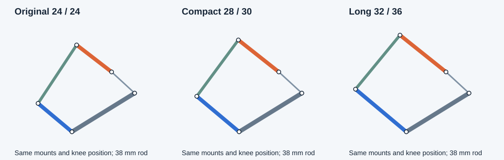

Recommended compact compromise: 28 mm crank and 30 mm pickup. Keep the 40 mm carrier, 38 mm rod and 55 mm lower leg. This halves the extensions added to the original 24/24 mm arms: +4/+6 mm instead of +8/+12 mm. It does not reproduce all of the long design's leverage improvement.

Joint-center schematic in the neutral pose, at the same scale. Orange: crank; blue: pickup; green: connecting rod; gray: carrier. The foot-side geometry stays unchanged.
| Crank / pickup mm | Standing carrier kgf·cm | Standing load reduction | Run200 combined demand reduction | Run peak crank °/s | Minimum circle reach margin mm |
|---|---|---|---|---|---|
| 24 / 24 | 0.817 | 0.0% | 0.0% | 1187 | 1.869 |
| 26 / 28 | 0.724 | 11.4% | 8.4% | 1148 | 0.547 |
| 28 / 30 | 0.705 | 13.8% | 10.2% | 1110 | 1.056 |
| 28 / 31 | 0.679 | 17.0% | 11.0% | 1114 | 0.375 |
| 30 / 34 | 0.642 | 21.5% | 13.3% | 1085 | 0.709 |
| 32 / 36 | 0.630 | 22.9% | 14.7% | 1056 | 1.938 |
Percentages compare with original 24/24/38 geometry under identical assumptions. Standing figures are four-foot, level-body vertical-load estimates at 512 g. Combined demand is a conditional simultaneous torque-and-speed score, not measured force capacity. The minimum circle margin is distance from a linkage reach boundary, not clearance between solid parts.
26/28 mm is a smaller alternative, retaining about 11% standing load reduction. 28/31 mm improves standing leverage more than 28/30, but its Upright reach margin is only 0.375 mm versus 1.056 mm; it is a less tolerant geometric choice. Neither choice adds a software motion restriction.
Screened 169 integer-mm combinations (crank 20–32 mm, pickup 24–36 mm) at fixed 38 mm rod. Forty preserve the sampled assembly branch and all sampled poses. The set contains 87,027 native poses: 56,033 locomotion poses and 30,994 clip poses, covering Walk, Run, Crawl, Crab, both turning directions, crab sidesteps, and all 23 named motions. Preparation, speed changes and finish are included. Arbitrary manual joint combinations are not exhaustively tested.
The superficially appealing 24/27 and 28/32 pairs fail the existing Upright motion: maximum reach deficits 0.657 mm and 0.251 mm. They are not proposed as full-repertoire replacements.
Independent finite-difference force calculations agree within 9.6×10⁻¹¹ Nm. Sampled material-point positions match the original mechanism within 10⁻⁶ mm. Candidate Run200 solutions also agree with separately compiled native firmware motion code within 0.00072°. These checks prove the numerical retargeting, not physical servo performance.
A separately compiled 28/30 mm native sampler also completes all 18 locomotion command groups with unchanged timing, agreeing with the retargeted joint trajectories within 0.00070°. See native gait results and native_check.py.
Compared the original styled crank, carrier, pickup, rod, two servo meshes and housing across 1,349 representative and extreme poses from all 41 command groups. This is a surface-intersection comparison using extended source meshes, not a final manufactured-part clearance qualification.
Some folded poses already intersect the carrier-servo mesh in the original model. Fasteners, wires, adjacent legs and body/foot collisions are outside this scoped comparison.
The model uses massless rigid links and equal weight sharing among marked supporting feet; friction, acceleration, impact, flex and actual servo torque-speed behavior are not measured. The Run calculation includes horizontal contact force up to 20% of vertical force. Its screening reference is 1.8 kgf·cm and 600°/s from TowerPro's MG90S specification; the installed servos are not thereby qualified. Force mapping follows the Jacobian/virtual-work relation.
All compared designs still exceed the assumed servo envelope at the full requested Run timing. These dimensions improve leverage and packaging; they do not establish that this 512 g robot will stand up or run successfully on its current servos.
This task changes no Blender geometry, calibration, firmware or runtime limits. The live Blender model remains the previously applied 32/36 mm design. A chosen replacement requires CAD edits and motion/calibration retargeting before installation.
Evidence: assumptions and source hashes, verified candidate metrics, all 169 candidates, surface-intersection checks. Offline scripts are screen.py, verify.py and clearance.py.
Scripts currently use this workspace and /tmp/ainekio-compact-linkage paths. Build native samplers with cmake -S Slave/software/models/v2-12servo -B /tmp/ainekio-compact-linkage/native -DCMAKE_BUILD_TYPE=Release, then build targets v2_walk_command v2_clip_sample. Run screen.py and verify.py with NumPy. Run clearance.py in background Blender after copying the included mesh-reference.npz and collision-poses.npz arrays into /tmp/ainekio-compact-linkage. Run native_check.py to compile and compare the compact native gait sampler. Run200 verification reuses the prior run200-torque-speed-20261005 analyzer and the retained Downloads/Ainekio-Run200-Linkage-Study snapshot. No script connects to the robot.